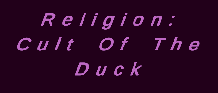
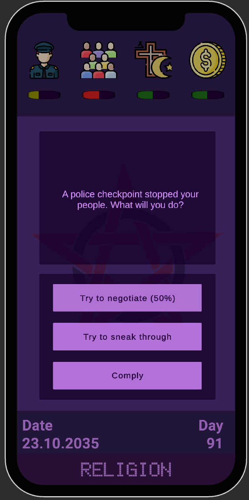
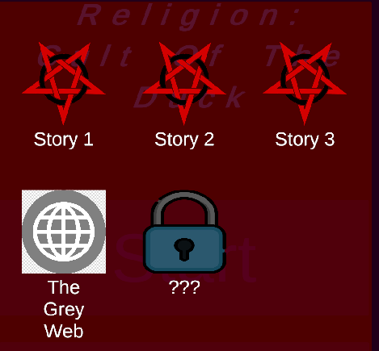

Religion: Cult of the Duck is a narrative-driven strategy game where every decision shapes your influence, belief system, and the survival of your cult. Manage resources, control followers, and uncover hidden consequences behind your choices.
The game is built using Unity with a modular GameManager architecture and JSON-based event system. New events and story branches can be added easily without rewriting core logic, allowing fast iteration and expansion.